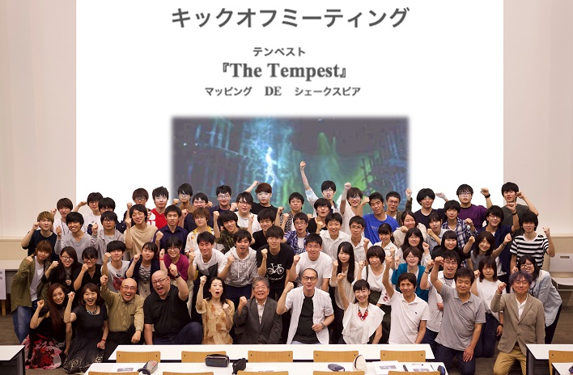
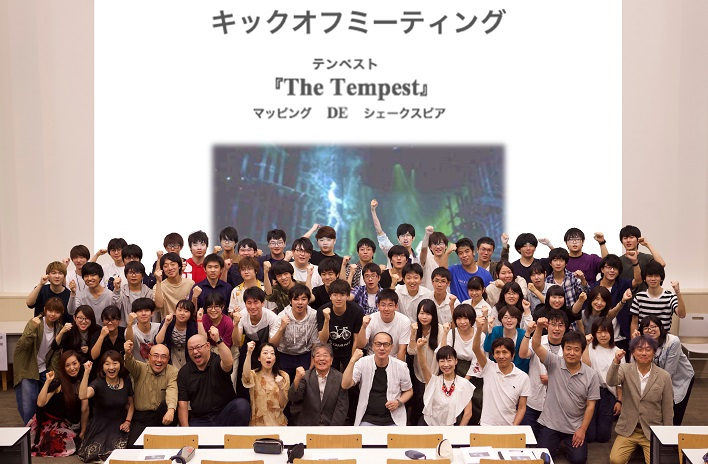

シェイクスピアの最後の作品である『テンペスト』を地元パフォーマーらによる演劇を中心に舞踏、歌、合唱を織り込み、
それにプロジェクションマッピング映像と音楽、
ステージ造形などを交えて繰り広げられる総合舞台芸術作品である。
このプロジェクションマッピング制作を担当しているTeamAIに自分は所属しているため映像制作でこのプロジェクトにかかわっている。
2020年10月9〜11日に開催予定だったが新型コロナウイルスの影響で1年延期になってしまっているため未だ未完成である。